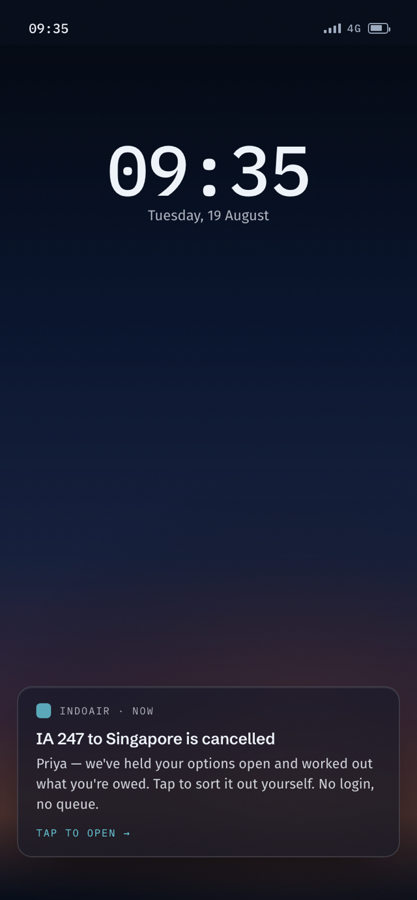
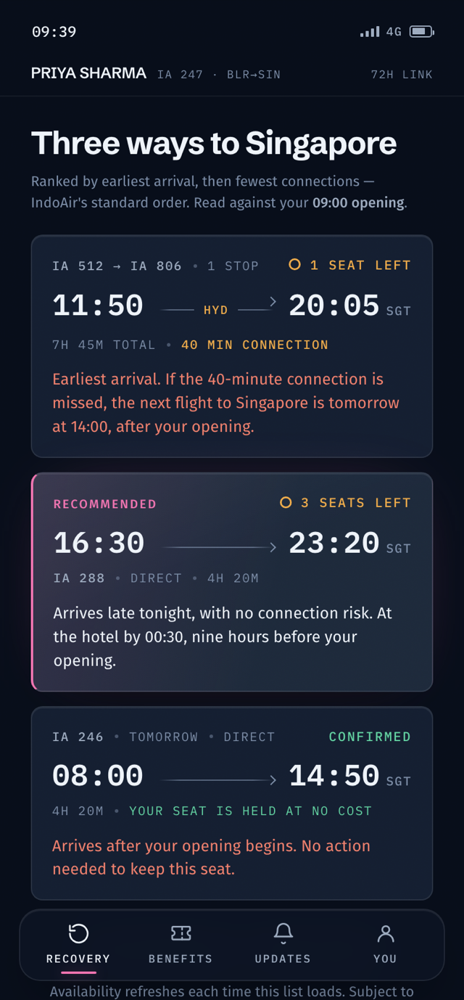
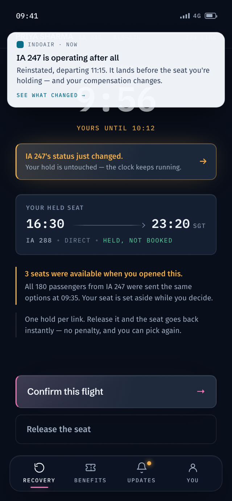
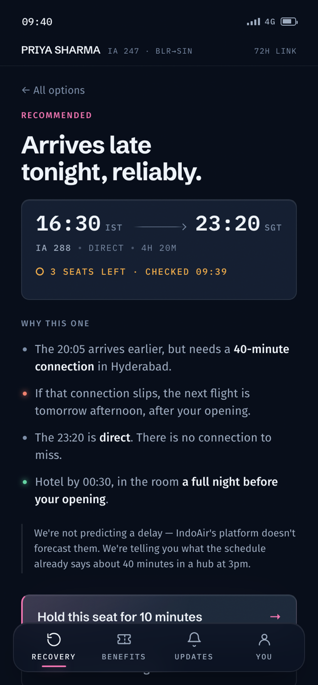
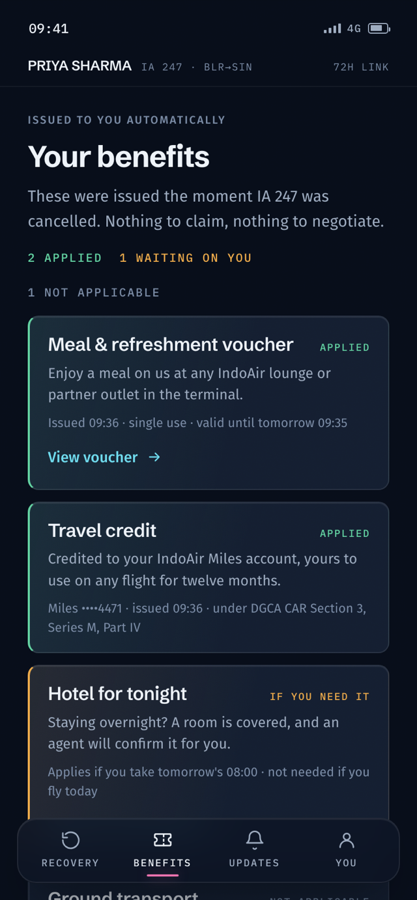
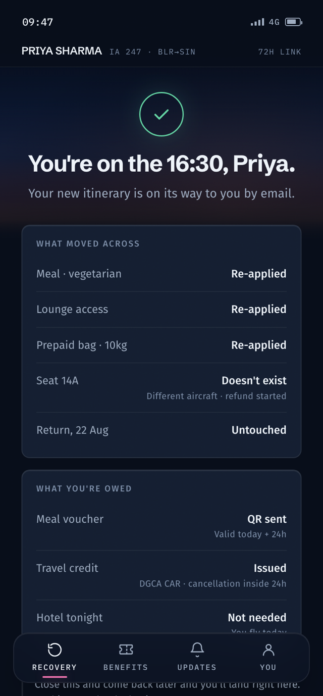
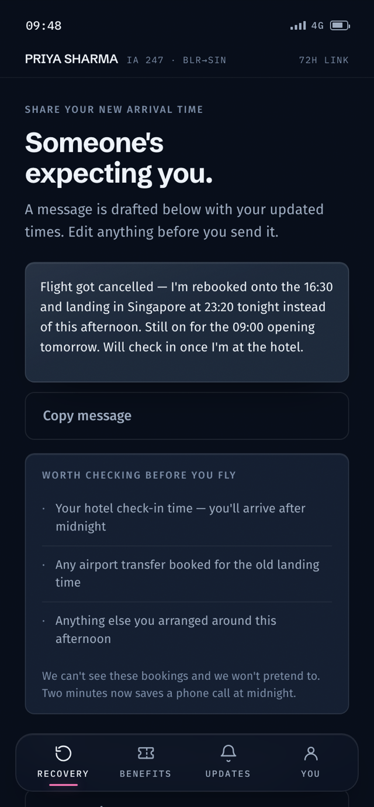

When IA 247 from Bengaluru to Singapore is cancelled at 09:35, the airline's systems know within two minutes. The 180 passengers find out soon after. What happens next is the gap this project lives in.
of flights
face significant disruption on any given day Observed
minutes
the average airport queue during a major disruption Observed
of passengers
prefer self-service rebooking when comparable options are offered Observed
The obvious reading of those numbers is "digitise the rebooking transaction." That reading is wrong, and noticing why became the spine of the product.
A disruption recovery is a decision made against competing constraints: which alternatives have seats in your fare class right now, how a 40-minute connection in a hub interacts with the thing you're actually travelling for, what the regulator says you're owed and under which cause code, what happens to your prepaid bags and your return leg, and what the other 179 passengers are doing to the same three options while you think. A search-results page answers none of that. It hands a stressed person a sorted list and makes the hard part, evaluating consequences under time pressure, entirely their problem.
The first iteration of this project digitised the transaction. It worked, and it was reviewed as exactly what it was: a competent rebooking tool with no product thinking in it. The second iteration started from a different observation.
Passengers queue for consultation, not execution. So the product to build is not a faster transaction. It is whatever makes a stressed person confident enough to commit, alone, in a few minutes. That reframe changed where the AI sits: instead of a feature inside a booking flow, the workflow was rebuilt around what the system can genuinely do before, during, and after the human's decision. Designed
The workflow today
The AI-native workflow
Same regulation, same inventory, same passenger. What moved is the location of effort: synthesis, calculation, and protection happen before the human arrives, so the human's minutes are spent on the one thing that is genuinely theirs.
AI-assisted means an existing workflow with an AI feature attached: a chatbot on a booking site, a "smart" sort. AI-native means the workflow's shape assumes the system can synthesize, act, and explain on its own, and the interface exists to make that work legible and to keep the human in charge of what matters. The claim has to be earned by the build, so here is the evidence:
Human — Priya
AI layer
Operational system
Human → AI: intent, refusal, escalation
AI → Human: completed work, options, reasons, warnings
AI ↔ System: queries, holds, execution · the system never speaks to the human untranslated



A technical fault cancels IA 247. The cause code matters: it determines what the airline owes.
Two minutes after filing. 180 passengers found, channels chosen, tokenised links dispatched. No login: a password wall in a crisis is a queue by another name.
Meal voucher and travel credit, from the regulator's rules, deterministically. Nothing to claim, nothing to negotiate.
Every passenger is placed on the next day's departure automatically, so doing nothing is safe.
Three viable routes, each labelled with what it means for the passenger, and watched for availability from then on.
What matters most for this trip: reaching on time, an onward connection, or nothing fixed. The one thing the airline cannot look up. Skippable, with the cost of skipping stated.
Deliberately not the earliest arrival. The fast option's 40-minute connection risks the entire purpose of the trip; the late direct puts her in the hotel a night early. The trade-off is argued, on screen.
The seat comes off the market while she makes a phone call. One hold per link, instant release, honest countdown.
IA 247 is reinstated while she holds a seat. The product informs through a banner, a strip, and the ledger; it never navigates her anywhere, the countdown keeps running, and it volunteers the bad news: a delay is not a cancellation, so her travel credit is withdrawn. Implemented
Only her own fare class is ever offered, so no fare difference exists and no card field appears. Progress is saved; nothing books twice.
Meal, lounge, prepaid bag move across. Her window seat doesn't exist on the new aircraft, so its refund starts automatically and the confirmation says so.
A message to the person expecting her, drafted per outcome: a 23:20 arrival and a reinstated 18:05 break different things. Monitoring continues in a notification ledger she never has to refresh.
A passenger doesn't need to understand the system. She needs enough transparency to evaluate what it tells her. Four mechanisms carry that load, all shipped:
What the interface does when the system doesn't know: it says so, with a timestamp, and keeps the human's options open. Confidence scores on recommendations, and a blocking re-check when data grows older than the decision, are the natural next layer. Future exploration


Problem
The spec sorts by earliest arrival; the earliest option carries a connection risk that destroys the trip's purpose.
Decision
Recommend the second row, and say why, on screen.
Why
A recommendation that restates the sort adds nothing. Judgment against the sort is the product.
Problem
Committing alone is frightening, but ticketing is one irreversible transaction; an undo window would be a lie.
Decision
A 10-minute hold, one per link, instant release on decline.
Why
Reversibility a passenger can trust is time before the step, not fiction after it.
Problem
The airline knows where she's going, never why. Recommendations without intent are guesses.
Decision
Ask what matters most, once, skippable, with the cost of skipping stated.
Why
Intent capture without a chatbot. The answer reframes every option downstream.
Problem
Her cancelled flight is reinstated while she holds a seat. The spec says remove rebooking on recovery.
Decision
Banner, strip, and ledger entry; no auto-navigation; the countdown keeps running; the compensation change is volunteered.
Why
Mid-decision attention belongs to the person. Respecting it, and delivering bad news unprompted, is the trust budget.
Problem
Any fare difference sends a stressed passenger back to a human, and self-service dies at the card field.
Decision
Offer only her own fare class, so no price can exist; state "nothing to pay" explicitly.
Why
Scope discipline as UX. The best payment screen is the provably absent one.
Implemented
Designed / proposed
The prototype was built with Claude as the design and build collaborator, in a loop: frame in writing → generate → inspect against the requirements → critique → rebuild → validate. The thesis, the flow, and the scenario were locked in prose before any screen was generated, with written constraints the generation had to live inside: no invented statistics, no fare differences, every rendered time checked against one canonical table.
What made it design rather than acceptance is what got thrown out:
Eight structured review rounds, each a written critique answered with a rebuilt artifact, are the actual design history. AI wrote every line of code and multiplied the speed of execution; the allocation of responsibility between the human, the AI, and the reservation system was never delegated.
Six automated acts before she arrives; zero automated bookings, ever.
A sort key is not a rationale. Sometimes the right recommendation argues against the top of the list.
Counts and timestamps, with the cause explained. Never a countdown, never a pressure tactic.
A ten-minute hold a passenger can trust beats an undo window the system can't honour.
Confirmed, recommended, estimated, and live are distinguishable before a single word is read.
When the world changes, inform and keep the countdown running. Attention belongs to its owner.
Not with the seat. The last screen drafts the message her disruption actually requires.
No time savings, satisfaction scores, or adoption figures appear in this case study, because none were measured. This is a POC against a written requirements document; the four-minute recovery and the queue-reduction outcomes are design targets the POC exists to earn a pilot for. What can be counted honestly:
screens, clickable end to end
automated actions before the passenger opens the link
recovery paths: one obvious next step, four always reachable
alternatives, each labelled with its consequence
certainty states in the visual system
BRD use cases mapped; every screen tagged to one, or flagged as a design decision
outcome branches with outcome-aware aftercare
structured feedback revisions between first build and live
payment fields, by design
Designing AI-first inverted the usual order of work. What came first was a division of labour: what the system should do silently, what it should propose loudly, and what it must never touch. Most of the design effort went into things invisible in a screenshot: that the recommendation argues, that scarcity carries a timestamp, that the hold exists, that bad news arrives volunteered. The role shifts from arranging interface to allocating responsibility, and the interface becomes the evidence of that allocation.
If this became a production product, the honest list is long: research with genuinely disrupted passengers, operational validation of the recommendation logic, evaluation and monitoring of the agentic layer's failure modes, multi-passenger bookings, accessibility depth beyond compliance-by-construction, and the governance question every agentic system owes an answer to: who is accountable when the system's silent work is wrong. This POC's answer, that the human owns every commitment and the system owns its own transparency, is the position I would defend into production.

